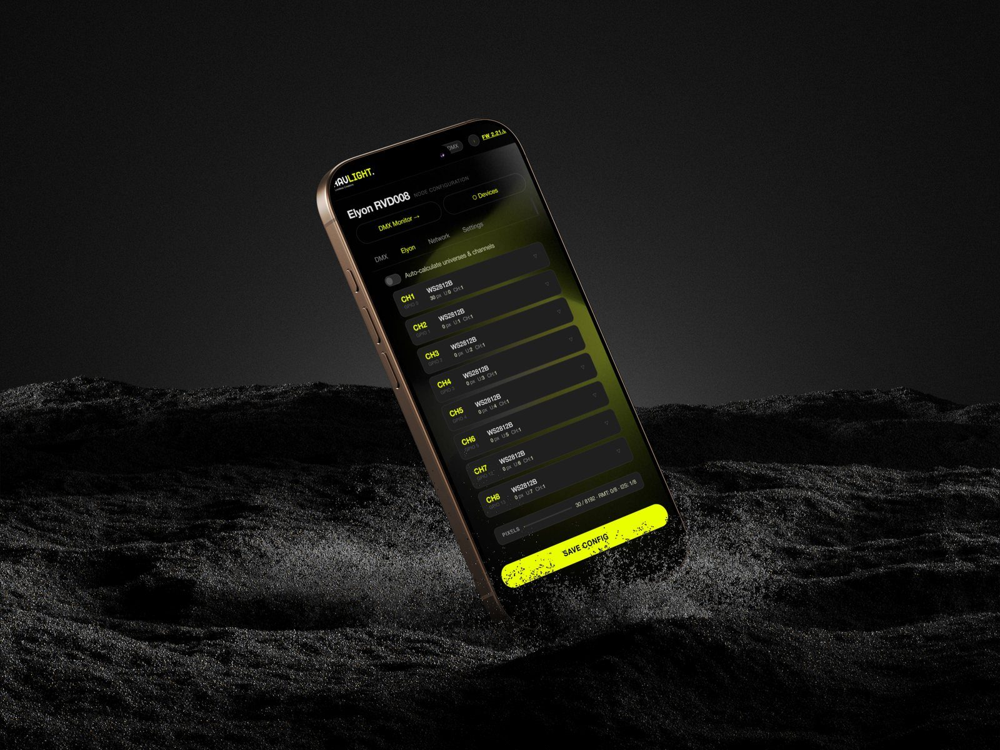
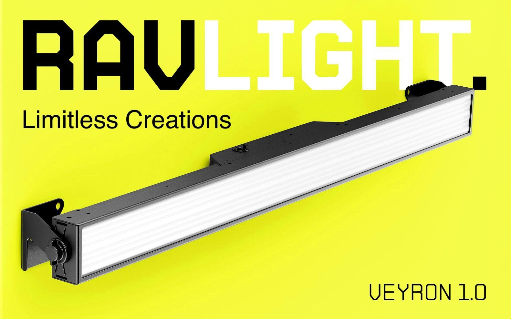
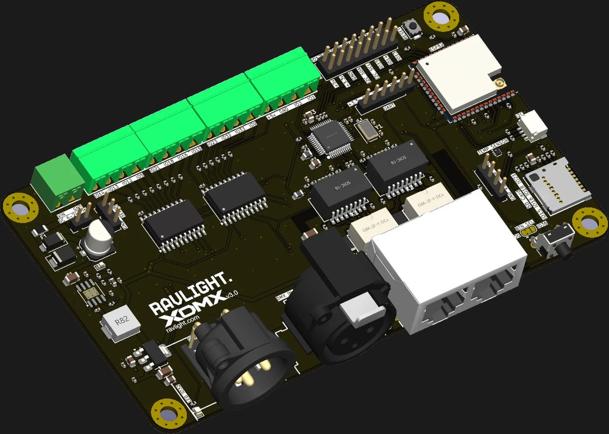
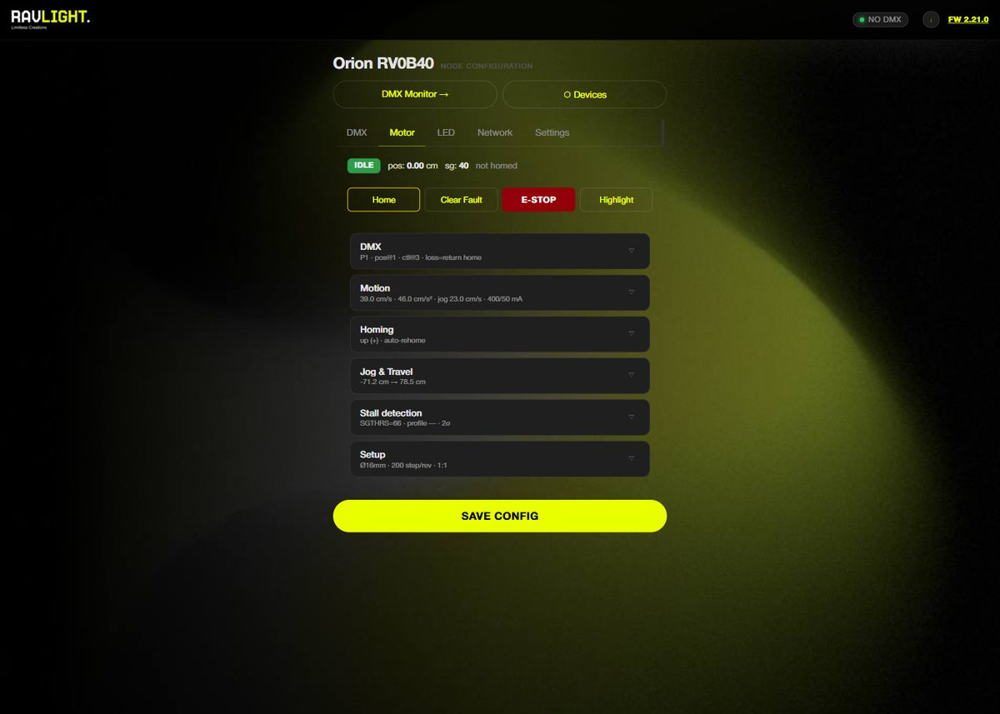
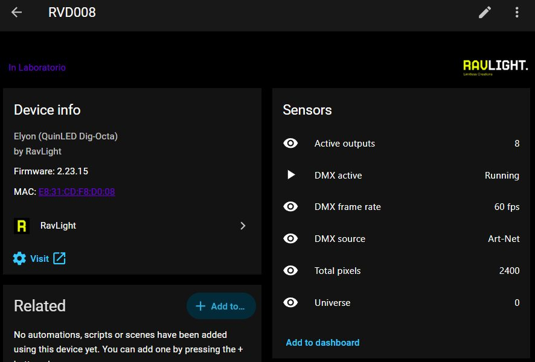

Professional DMX fixtures on hardware you can afford
Open firmware for ESP32 with Art-Net, sACN and DMX512, and the fixtures and boards we build with it.

What we make

Veyron
A 1 m pixel bar with two RGB rows and six white segments.
Product →
XDMX v3
One board for a whole fixture. Two Ethernet ports, two isolated DMX ports, up to 14 outputs.
Board →
Polaris
Find, patch and update a whole rig from one list.
Product →A base you build your fixture on
Networking, DMX, effects, the web interface and updates are done. The fixture on top is yours to shape.
Art-Net and sACN
Up to 32 universes, ArtPoll reply, ArtSync and multicast per universe. No external libraries.
DMX512 in and out
Wired RS-485 for a classic DMX chain, or bridge the network to cable.
One core, many fixtures
A new fixture declares its pins, DMX patch and controls. The core stays untouched.
Ethernet first
Wired Ethernet as the main link, then WiFi, then its own access point. Always reachable.
Runs without a console
Record DMX into scenes, play shows, run built-in effects, or hold the look when the signal stops.
Updates over the network
One file per update. The first install happens here, over USB, in the browser.
Everything in the browser
Every fixture has its own web page. No app and no cloud: open its address and set it up.
- Network: Ethernet, WiFi or access point, found by name on the network
- DMX: Art-Net, sACN, cable or effects, universe and address
- Fixture: the controls each fixture declares for itself
- DMX monitor: all 512 channels live, the fixture's own highlighted
- Updates, configuration backup and device discovery

Firmware shaped around real fixtures
Each fixture is RavLight adapted to a product: one of ours, or a board from an independent builder. Building your own? That is what RavLight is for.
Veyron
Pixel bar. 40 RGB pixels, 6 white segments, 9 personalities, 32 macros.
Elyon
LED controller with up to 10 outputs. WS281x, SK6812, APA102, PWM or relay, each on its own universe.
Orion
Motorised winch. Homing without a limit switch, a setup wizard and DMX position control. Lifting twelve chandeliers in a bar in the USA.
Axon
Network to DMX node. Art-Net or sACN in, wired DMX out, with a status display.

Twelve bars at BASE
Veyron over the dance floor in Sistiana, run from Resolume and managed with Polaris.
One rig, one list
A fixture's own page is enough for one fixture. Polaris is for forty. It runs on a PC and you use it from a browser or a phone. It never sends DMX: your console keeps that job.
- Finds fixtures across subnets and lighting VLANs
- One row per fixture: personality, address, universes, IP
- Patches a whole group: it proposes, you check, then it writes
- Project files you prepare at the workshop and open at the venue
- Downloads firmware once and updates the whole rig
Your rig on the house dashboard
A free integration adds every RavLight controller to Home Assistant on its own. It does not send pixels. It tells you if the show is running and how the hardware is doing.
- Found automatically: accept the notification and it is set up
- DMX active, frame rate, source and universe per controller
- Temperature, link quality, uptime and running hours
- Firmware updates as an update entity
- All local: no cloud, no account

Supported boards
Controllers you can buy today and RavLight's own boards. All ESP32.
| Board | Fixture | Ethernet | Outputs |
|---|---|---|---|
| XDMX v3 soon | Veyron, Elyon, Axon | 2 ports, switched | 8 to 14 × 5 V, 2 × DMX |
| XDMX rev2.2 | Veyron | Yes | Pixel strip, white segments, DMX |
| QuinLED Dig-Octa | Elyon | Yes | 8 × LED |
| Gledopto Elite 4D | Elyon | Yes | 4 × LED |
| Gledopto Elite 2D | Elyon | Yes | 2 × LED |
| QuinLED Penta+ / Penta Deca | Elyon | Optional | 5 / 10 × PWM |
| LED Lifter v5 | Orion | Yes | Winch motor, 4 × LED |
| XDMX v1.4 | Axon | Yes | DMX, 2 × LED, display |
Flash it in two minutes
Plug the board in over USB, pick your fixture, click install. Chrome or Edge.